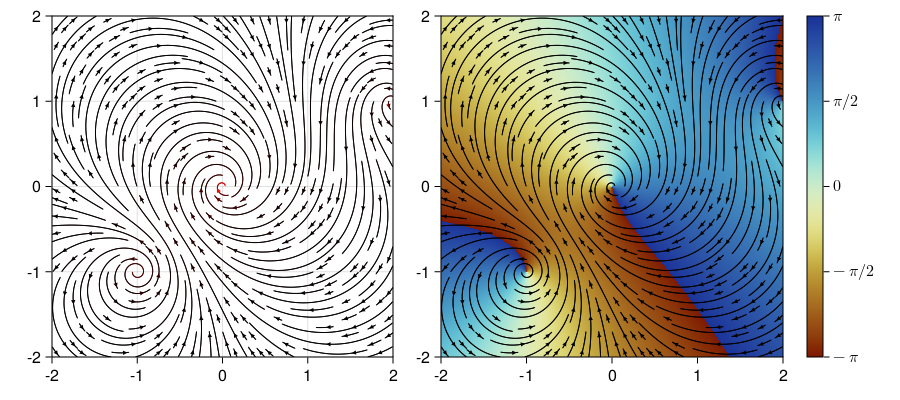
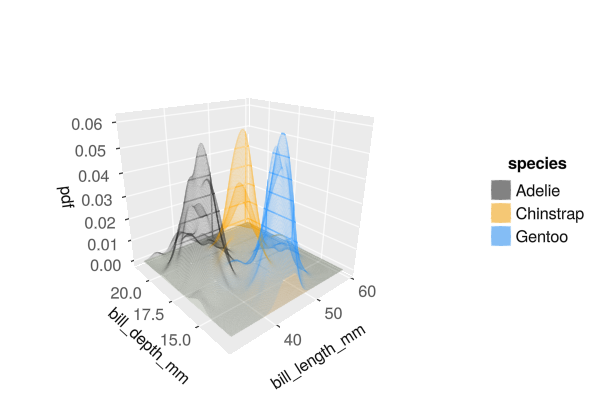

Getting Started with Julia
Why Julia?
There are a vast number of articles on the internet on the topic of why you would want to use Julia. I’ll briefly explain why I prefer programming in Julia and think you may too.
Everyone who either programs seriously, or merely dabbles in code likely has a personal favourite programming language. It may be that they only know one language. Professional programmers often have more than one language they work in, and often prefer a certain tool for specific tasks. It is a simple fact that some languages are better for certain tasks than others for various reasons.
Julia was conceived with technical programming in mind. It has its origins in academia, being developed at MIT, and is still mostly used by researchers, in natural and engineering sciences, computer science, mathematics, machine learning and many other fields. Commercial software written in Julia is available, e.g. Pumas for pharmaceutical drug discovery, or TIM for automatically building predictive models from time-series data. The bulk of work done in Julia, however, is in research and development, in academia, but also at approximately 10,000 companies and institutions world-wide, including AstraZeneca, BlackRock, Google, Intel, Microsoft, Moderna, Pfizer, NASA, the Federal Aviation Adminstration and the Federal Reserve Bank of New York to name a few. Julia is taught in over 1,500 universities, including MIT, Stanford and UC Berkley.
Julia was designed to solve the so-called two language problem. This is where a researcher develops algorithms in a dynamic language, such as Python or R, where it is easy to interact with the code and change things around with little effort. At some point however, they find the need to speed up the code as it becomes more complex. This often results in a rewrite of the program in a fast language, such as C or Fortran. Julia is a dynamic language, but generates code as fast as anything you can do in C, without the arcane syntax and multiple built-in ways to shoot yourself in the foot. This doesn’t imply that your Julia code is always fast. It is possible to write slow code in any language. It is just a whole lot easier to write fast code in Julia. When you run into speed problems in Python or R, the only solution is to call libraries written in C, with Python or R wrappers. In Julia, your fast code is usually 100% Julia code - you don’t need to know a second, fast language. In addition, Julia plays well with C, Python and R and you can call code written in any of these directly from Julia and vice versa.
Julia is open-source and free. There are thousands of packages available in Julia - also open-sourced and free. Since Julia was developed for technical programming, most of these packages similarly are for solving technical problems. There are however also many others, from web development to animation and just about anything in between. Linear algebra is baked right into the language, including working with sparse matrices, so is parallel programming - multithreading and multiprocessing. There are very powerful differential equation solvers, non-linear equation solvers, optimisers, machine learning libraries, and even thermodynamic property libraries readily and freely available.
Julia’s syntax is borrows the best parts from Matlab, Python and Lisp. A lot of effort has gone into making it easier to learn the syntax. That said, there is always some learning curve when venturing into a new programming language. Like you can only learn to ride a bicycle by climbing on one and starting to pedal, the only way to learn programming and programming languages is to write code.
Why Julia code is fast
The defining paradigm in Julia is multiple dispatch. Unless you are a computer scientist, that probably doesn’t mean much to you. I’ll try to explain simply with some examples.
Here is a little Julia code. Don’t worry if you don’t know the syntax yet. We are just defining a function thats takes two inputs a and b and returns 2b + a. Note that we don’t need a multiplication sign between the 2 and b in Julia - the language attempts to follow standard mathematical syntax where possible. You can also use any Unicode symbols, like Greek letters, subscripts and superscripts for variable names. Just don’t get carried away with those.
function myfunc(a, b)
return 2b + a
endWe enter the code at the Julia REPL (we’ll get to this soon) and call it:
julia> function myfunc(a, b)
return 2b + a
end
myfunc (generic function with 1 method)
julia> myfunc(1, 2)
5
julia> myfunc(1.0, 2.0)
5.0The first thing to notice is that unlike in languages like C, Basic, Pascal or Fortran, we never specified the types of the variable, i.e. whether they are integers or floating point values (numbers with fractional parts). There are times when you want to do this, but generally you would not. However, when we called the function with two integers, the answer was returned as an integer. When we called the code with two floating point values, the answer was returned as a floating point value.
What happened behind the scenes? Julia infers the types of all of the inputs and generates the optimal code for that collection of input types. We can see this in action by asking Julia to show us the code it generated1:
julia> @code_llvm myfunc(1, 2)
; @ REPL[1]:1 within `myfunc`
; Function Attrs: uwtable
define i64 @julia_myfunc_172(i64 signext %0, i64 signext %1) #0 {
top:
; @ REPL[1]:2 within `myfunc`
; ┌ @ int.jl:88 within `*`
%2 = shl i64 %1, 1
; └
; ┌ @ int.jl:87 within `+`
%3 = add i64 %2, %0
; └
ret i64 %3
}Most of what you see here is going to look like hieroglyphics, but don’t worry. You can ignore any line that starts with a semi-colon. These are automatically generated comments. The first line of actual code is:
define i64 @julia_myfunc_172(i64 signext %0, i64 signext %1) #0 {This defines a function (with a unique name - you’ll understand later why this is done) that returns a type i64, a 64-bit integer, and accepts two inputs, %0 amd %1, both of type i64.
The next line is:
%2 = shl i64 %1, 1This shifts the value in %1 left by one bit and stores the result in a new variable, %2. If you know binary numbers2, you will know that this means the value is multiplied by two, just like shifting a decimal number left by one position multiplies the value by ten.
The next line is:
%3 = add i64 %2, %0This creates a new variable, %3 and writes into this variable the result of adding %2 and %0.
Finally, we have
ret i64 %3This returns the value in %3, as an i64, a 64-bit integer.
Without breaking your head about the details, you should appreciate that this is code that is optimised for the case where we passed two integers, including using a shl (shift left) operation, rather than the machine multiplication instruction, as the former is faster.
Now let’s see what we get when we pass to 64-bit floating-point values.
julia> @code_llvm myfunc(1.0, 2.0)
; @ REPL[1]:1 within `myfunc`
; Function Attrs: uwtable
define double @julia_myfunc_191(double %0, double %1) #0 {
top:
; @ REPL[1]:2 within `myfunc`
; ┌ @ promotion.jl:389 within `*` @ float.jl:385
%2 = fmul double %1, 2.000000e+00
; └
; ┌ @ float.jl:383 within `+`
%3 = fadd double %2, %0
; └
ret double %3
}The function definition looks similar to the previous case, expect that we now have variables of type double, rather than i64.
The next line:
%2 = fmul double %1, 2.000000e+00Since we can’t simply shift a floating point value left by one bit to multiply it by two, the fmul instruction, floating point multiplication, is used to multiply the value in %1 by 2.0. Then, in the next line, the fadd (floating point addition) instruction adds the result from the multiplcation to %0:
%3 = fadd double %2, %0The important thing to learn from this is that Julia built optimised versions of the function for each case. Similarly, is we pass an integer and a floating point value, or vice versa, or any two other appropriate types of values, new versions of the functon will be constructed and each will be optimised for that combination of types passed.
It goes evern further.
julia> A = [1 2;
3 4]
2×2 Matrix{Int64}:
1 2
3 4
julia> B = [5 6;
7 8]
2×2 Matrix{Int64}:
5 6
7 8
julia> myfunc(A, B)
2×2 Matrix{Int64}:
11 14
17 20Here we defined to 2x2 matrices of 64-bit integers and passed those to our function. And it just works! More so, the code was again optimised for handling these types of variables.
This is how Julia generates fast code. The original function we defined without specifying variable types is called a generic function. Julia then builds specialised version of the function based on the types of the variables we passed. Whenever we call the function, Julia checks if it has already compiled an appropriate version and then calls that version. If not, it compiles a new, specialised version to use.
This allows you to generate the fastest possible code, but for large pieces of code, this also results in a delay while the code is compiled. This is called TTFX (Time to First X) or often just Time to First Plot, as this is especially noticable when calling the various plotting libraries in Julia. The first time to call a plotting function, there is a considerable delay. Every time after that, the plotting is lightning fast.
julia> @time using Plots
6.401451 seconds (8.83 M allocations: 612.705 MiB, 2.67% gc time, 11.00% compilation time: 3% of which was recompilation)
julia> @time scatter(randn(10), randn(10))
1.152227 seconds (93.64 k allocations: 4.612 MiB, 99.65% compilation time)
julia> @time scatter(randn(10), randn(10))
0.000392 seconds (414 allocations: 43.344 KiB)It takes 6.4 seconds to import the Plots package. The first time we call scatter to generate a scatter plot, the code is compiled, which takes 1.15 seconds. The next time however, the compiled code is already available and it takes 0.4 milliseconds to generate the plot. Every subsequent call to scatter with the same types of values passed to it, will also be fast.
In every new version of the Julia compiler, some work is included to reduce he latency of TTFX. The next version of Julia at the time of writing, v1.9, will include several new features to significantly reduce the problem. This is not magic though, merely a toolset that allows package authors to increase the amount of code that is precompiled when the package is first installed. This will only help of the tools are used. Since the Julia community is generally very enshusiastic about speed, it is reasonable to expect most, if not all of them will indeed do so.
Julia for people in a hurry
Some of the people reading this document will be experienced programmers and some will be masters of numerical methods. Most of you won’t be either, but still want to solve a technical problem. Here Julia is your friend.
Any commonly-used numerical methods you are likely to want to use is already available in a package, generally written by people with PhDs in the relevant field and optimised to the nth degree by researchers who needed this before you did and contributed to the openly available source code. Sometimes, the methods are already built into Julia, as is the case for linear algebra.
Let’s say you want to factorise a matrix. You could pull your linear algebra text book and your numerical methods notes off the shelf and remind yourself which factorisation methods are best-suited to your type of matrix and how that methods works, then code your own copy. Or you could just let Julia take care of it for you:
julia> A = rand(5, 5) #create a random matrix
5×5 Matrix{Float64}:
0.80492 0.282962 0.470656 0.947669 0.185726
0.201024 0.65166 0.827719 0.759129 0.597441
0.391872 0.829147 0.437748 0.0278852 0.0868745
0.583262 0.934832 0.187209 0.771838 0.373839
0.424062 0.973599 0.7794 0.917351 0.0827884
julia> B = A*A' #create a symmetric matrix by multiplying A with its transpose
5×5 Matrix{Float64}:
1.88205 1.56614 0.798632 1.62299 1.86838
1.56614 2.0834 1.0545 1.69067 2.11067
0.798632 1.0545 1.041 1.13963 1.34739
1.62299 1.69067 1.13963 1.98464 2.0424
1.86838 2.11067 1.34739 2.0424 2.58357
julia> factorize(A)
LU{Float64, Matrix{Float64}, Vector{Int64}}
L factor:
5×5 Matrix{Float64}:
1.0 0.0 0.0 0.0 0.0
0.526837 1.0 0.0 0.0 0.0
0.724621 0.885107 1.0 0.0 0.0
0.486846 0.83853 0.379704 1.0 0.0
0.249744 0.70464 -0.537792 -0.110424 1.0
U factor:
5×5 Matrix{Float64}:
0.80492 0.282962 0.470656 0.947669 0.185726
0.0 0.824524 0.531441 0.418083 -0.0150591
0.0 0.0 -0.62422 -0.284911 0.252587
0.0 0.0 0.0 -0.675877 -0.0868263
0.0 0.0 0.0 0.0 0.68792
julia> factorize(B)
Cholesky{Float64, Matrix{Float64}}
U factor:
5×5 UpperTriangular{Float64, Matrix{Float64}}:
1.37188 1.1416 0.582145 1.18304 1.36191
⋅ 0.883262 0.441459 0.385059 0.62939
⋅ ⋅ 0.712192 0.394468 0.38853
⋅ ⋅ ⋅ 0.53026 0.0671023
⋅ ⋅ ⋅ ⋅ 0.420928For the sake of examples, we create a random 5x5 matrix, A and then multiply it by its transpose to create a symmetrix matrix, B. We then ask Julia to factorise both, by calling the factorize() function (note the American spelling!).
For the square, random matrix, LU decomposition is the most appropriate method and that is what we get. For the symmetrix matrix, Cholesky’s methods is the most efficient and hence that is what Julia uses. It will also use other specialised methods for other specific matrix types. See the manual for details. When you use the factorised matrix in computations, further specialised, optimised methods will be used, depending on the factorisation that was used. You can of course just call specific factorisation methods, such as lu() or qr() as well.
Also note that the Cholesky factorisation returns a specialised type of matrix, UpperTriangular{Float64, Matrix{Float64}}, which also has specialised calculations methods that take advantage of knowledge of the structure of the matrix.
In a similar fashion, when solving differential equations, the DifferentialEquations.jl package can automatically select algorithms. You can help it along by supplying a hint that the problem is stiff, or you can specify which methods you want to use. For stiff problems, implicit methods are available and the package will use automatic differentiation to generate the higher level derivaties needed for these with low overheads.
These things don’t happen through magic, although it may look like it. The code, either in the Julia standard library or an a user-supplied package, was simply written by experts in the field. This means you can get away with knowing a little less about the intracacies of the mathematics than you would be able to if you had to write everything yourself. This by no means implies you shouldn’t learn more about the mathematics and numerical methods! More knowledge will always give better results.
Powerful plotting and data processing
Julia has several powerful plotting libraries available for data visualisation. You can use Plots.jl as a unified front-end for several plotting engines, like GR, Plotly or PyPlot. You may prefer to use Makie - a Julia-specific plotting library with that gives you extreme control over every aspect of the plot, including interactivity. You may prefer to add statistical analyses to the plot via GadFly.jl or AlgebraOfGraphics.jl.


Julia has one of the fastest tools for reading data files, in CSV.jl, or you can prefer to manipulate your Excel files directly from Julia with XLSX.jl. Tabular data can be easily handled with DataFrames.jl and you can even execute SQL-like queries on the data via Query.jl. If you need to add units to your numbers, then Unitful.jl is for you.
And much, much more
There are likely Julia packages for any task you wish to attempt. And if there isn’t a Julia-specific package, there is probably a wrapper for a Python or C library.
Because of Julia’s generic code, code re-use is Julia is more more common than in any other language, as was illustrated when we passed matrices to your little example function before. It is often possible to combine packages that have little if anything to do with each other to solve a problem.
Writing generic code is encouraged in the Julia ecosystem specifically to enable this. Rather than needing some all-encompasing package to solve your problem, you simply combine a few smaller, simpler and more easily optimised packaged to get the result you need.
When NOT to use Julia
There are of course instances where Julia is not the optimal choice.
If you want to compile a model to a binary file, Julia is likely not the best tool. While it is perfectly possible to compile Julia code to, e.g. a DLL file, the dynamic nature of Julia means that the entire Julia run-time is included in the file. This means a VERY large file is produced. This is an area of active development, and it is possible in some cases to compile small files, but at this time, there are better tools.
If you want to distribute your code to other people, but do not want to give them access to the source code, Julia may not be your first choice. It is again possible, and one way of doing this is by running your code on a server and giving the users access via a web page or Excel front-end, but it is not as simple as just compiling a DLL or EXE file in C or Visual Basic.
If you need to create a user interface with minimal effort, Excel is probably a better choice, especially if you intend to distribute the code. It is however possible (and not too difficult) to use Excel as a front-end for Julia code too.